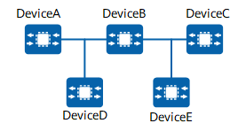

Understanding OSPF Authentication
OSPF authentication encrypts OSPF packets by adding authentication information to IP headers of the OSPF packets to ensure network security. A local device checks the authentication field in OSPF packets received from a remote device, and discards the packets if they do not contain the same authentication password as the locally configured one, thereby achieving self-protection.
OSPF Authentication Modes
In terms of packet type, OSPF authentication is classified as follows:
Area authentication: configured in the OSPF area view and applies to packets received by all interfaces in the OSPF area.
Interface authentication: configured in the interface view and applies to all packets received by the interface.
In terms of packet authentication type, OSPF authentication is classified as follows:
Non-authentication: Authentication is not performed.
Simple authentication: A configured password is directly added to packets for authentication. This authentication mode is insecure.
Message-digest algorithm 5 (MD5) authentication: A configured password is hashed using an algorithm such as MD5, and the ciphertext password is added to packets for authentication. This authentication mode improves password security. Currently, MD5 and hash-based message authentication code for MD5 (HMAC-MD5) are the supported algorithms.

As simple, MD5, or HMAC-MD5 is insecure, you are advised to use a more secure authentication mode.
Keychain authentication: A keychain consists of multiple authentication keys, each of which contains an ID and a password. Each key has a lifecycle, and keys are dynamically selected in a keychain based on the lifecycle of each key. A keychain can also dynamically select an authentication key to enhance attack defense.
Keychain improves OSPF security by dynamically changing algorithms and keys. It can be used to authenticate both OSPF packets and the process of establishing a Transmission Control Protocol (TCP) connection.
HMAC-SHA256 authentication: A configured password is hashed using the HMAC for secure hash algorithm 256 (HMAC-SHA256) algorithm, and the ciphertext password is added to packets for authentication. This authentication mode improves password security.
OSPF carries authentication types in packet headers and authentication information in packet trailers.
The authentication types are as follows:
0: non-authentication
1: simple authentication
2: ciphertext authentication
Application Scenario

The configuration requirements are as follows:
The interface authentication configurations must be the same on all devices on the same network so that OSPF neighbor relationships can be established.
The area authentication configurations must be the same on all devices in the same area.